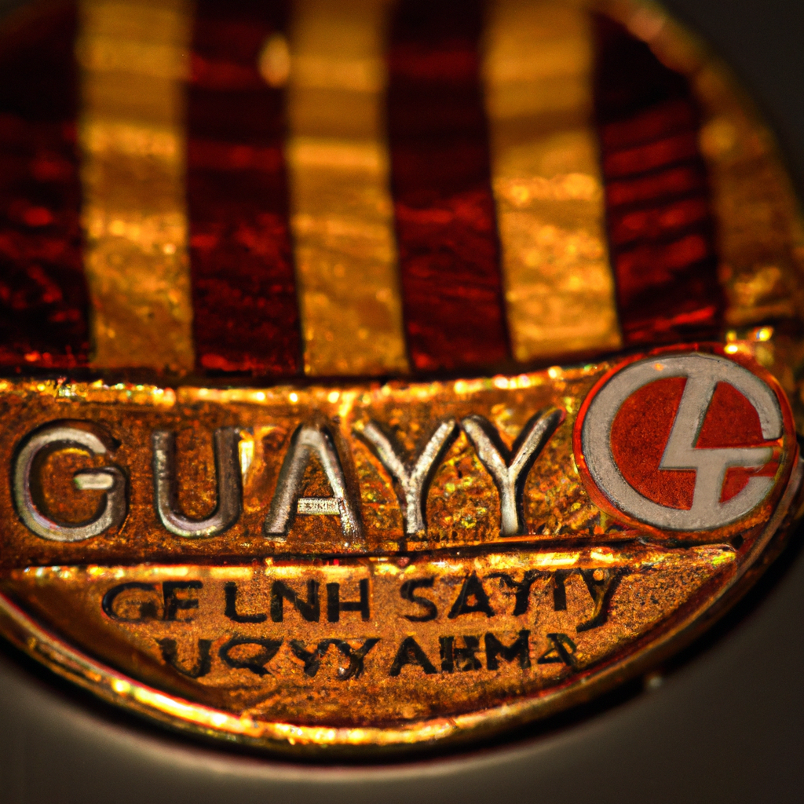

Galatasaray's UEFA run in 2000
Title: The Unexpected Champions: Galatasaray's 2000 UEFA Run
Tags: UEFA, Champions League, Galatasaray, 2000
In 2000, Turkish side Galatasaray made a surprise run to the UEFA Champions League final, defying expectations and capturing the hearts of the world along the way. It wasn’t just the fact that they made it to the final that shocked football fans, but how they got there.
The Turkish Super Lig side had to get through the group stage, which featured the likes of Arsenal, Barcelona, and Leeds United. They did this in style, finishing top of the group with 14 points and a 5-1-2 record. They then had to face the mighty Real Madrid in the quarter-finals and, despite being the underdogs, they managed to pull off a 2-1 aggregate victory and book their place in the semi-finals.
The semi-final saw them come up against the reigning champions, Bayern Munich, and few gave them a chance of making it to the final. However, against all odds, they managed to win the tie 3-2 on aggregate and book a place in the final.
The final saw them come up against fellow Turkish side, Valencia, who were the favourites to win the competition. Despite this, Galatasaray put in a fantastic performance and managed to win the final 1-0 to become the first Turkish side to win the Champions League.
The run was a remarkable one, and it was made even more remarkable by the fact that Galatasaray were not expected to have any success. They proved the doubters wrong, and their success story was one of the most memorable in Champions League history.